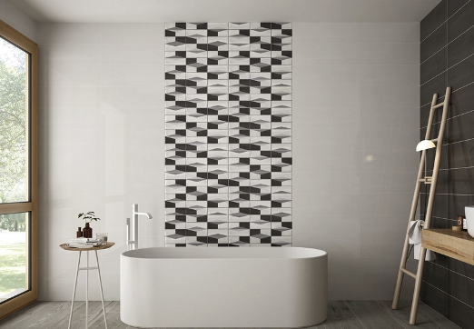

- Як вибрати плитку для ванної?
- Як вибрати керамічну плитку?
- Вибираємо колір і фактуру
- Мармур і інші імітації каменя
- Імітація дерева: стильно і затишно
Як вибрати плитку для ванної?
Плитка для ванної кімнати є найкращим типом покриття, адже вона не боїться вологи, пари та перепадів температур. Причому це стосується всіх видів матеріалів: кераміки, керамограніта, натурального або штучного каменю. Купуючи облицювальний матеріал, варто враховувати тип поверхні, адже він буває підлоговим і настінним. Керамограніт більш універсальний, але теж відрізняється товщиною. Але про все по порядку.

Як вибрати керамічну плитку?
Щоб вибрати оздоблювальні матеріали хорошої якості, не обов'язково знати рецептуру різних матеріалів і технології випалу. Досить поглянути на упаковку, де вказані всі характеристики.
-
Керамічна плитка для підлоги маркується зображенням ступні. Вона має товщину 9-12 мм. Що стосується класу зносостійкості, вибирайте 1 або 2 клас, адже ванна кімната не відноситься до приміщень високої прохідності. Підлогове покриття не повинно ковзати, тому відмовтеся від глянцевого кахлю. Враховуйте коефіцієнт тертя на мокрій поверхні, позначений зображенням черевика на тлі нахиленою смужки. Цифра 3 або 4 вказує, що цей кахель не ковзає, тому безпечний.

-
Настінна позначена відбитком кисті руки. Вона має товщину 6-9 мм. Плитку для ванної кімнати на стіну вибирати набагато простіше. Вона виконує декоративну функцію, тому клас зносостійкості, а також тип поверхні не мають значення. Матова, глянцева або рельєфна - вибір за вами. Але пам'ятайте, що глянцеві поверхні вимагають ретельного догляду, адже на них видно краплі, розлучення, відбитки пальців.

В санвузлах часто укладають керамічний кахель, адже міцності і вологозахисту цього матеріалу цілком достатньо для експлуатації на протязі 10-15 років. Якщо вдалося знайти колекцію з відповідним дизайном - сміливо замовляйте. У нашому салоні ви знайдете сотні лінійок керамічної і керамогранітної плитки кращих фабрик Італії, Іспанії, Чехії, а також України.
Вибираємо колір і фактуру
З технічними характеристиками все ясно, перейдемо до найцікавішого - забарвленням. Дизайнери радять відмовитися від використання оздоблювальних матеріалів штучних відтінків. Плитка яскравих кольорів з геометричними або квітковими малюнками допускається тільки в якості обробки акцентної стіни або декоративного панно.

Виставки керамічної продукції показують популярність об'ємної обробки й мозаїки. Ці елементи використовують для декорування акцентної стіни біля умивальника або інсталяції. Часто рельєфною плиткою обробляють зону ванни, візуально виділяючи її із загального простору. Рельєф і мозаїка - стильні елементи, які виділяють певні зони. Але ніяк не формують загальний простір. Ефектність рельєфної обробки зникає, якщо її занадто багато.
Протягом останніх років популярні колекції, що імітують натуральні породи дерева, каменю, а ще метал і бетон. Чим реалістичніше малюнок і структура - тим краще. Технологія виготовлення керамограніта дозволяє створювати неймовірно реалістичні поверхні, точно відтворюючи прожилки дерева або малюнок мармуру. Розглянемо найбільш популярні варіанти обробки.
Мармур і інші імітації каменя
Керамограніт, що імітує мармур, називають сучасною класикою, адже ця обробка доречна в будь-яких приміщеннях. У дизайнерських інтер'єрах часто зустрічається білий мармур з коричневою, чорною, пісочної, а також сірої прожилкою. У глянсовому виконанні таке покриття виглядає розкішно. Погляньте на лінійку Ultra Marmi італійської фабрики Ariostea. Стильну імітацію білого мармуру також представила компанія Fap Ceramiche в колекції Roma (на фото).
На сьогоднішній день актуальні всі імітації каменя. Починаючи брутальним бетоном або гранітом, закінчуючи вишуканими варіаціями онікса і травертину. Три відтінку бетону представлені в серії Limeria польської компанії Cerrad. Шанувальникам травертину радимо поглянути лінійку Horizon італійської фабрики Ariana.

Імітація дерева: стильно і затишно
Керамограніт "під дерево" - універсальне покриття, доречне у будь-якому приміщенні в якості основної або акцентної обробки. На ринку з'явився керамічний паркет, який по зовнішнім виглядом не відрізнити від натурального дерева. Колір, рисунок прожилок і навіть текстура - все з точністю імітує деревину. Це найкраще підлогове покриття для підлоги у ванній кімнаті, адже рельєфна поверхня не ковзає, тому безпечна.
Щорічно з'являється сотні колекцій підлогового і настінного керамограніта різних відтінків, рельєфів, форматів. У дизайнерських проектах часто використовується плитка в форматі ламінату або паркетної дошки. Укладання візерунком "ялинка" - є трендом, який нескоро втратить актуальність. Дерев'яне оздоблення також використовують для укладання на стіни, зокрема для оформлення душової зони. Вона відмінно поєднується з імітаціями каменю, бетону, металу.

Обов'язково погляньте на оригінальну лінійку Dock від APE Ceramica. Вишукані поєднання дерева з натуральним каменем пропонує італійська фабрика Devon & Devon . Цінителям состаренной деревини сподобається серія Craft іспанської фабрики Mainzu.Більше варіантів шукайте в нашому каталозі і замовляйте оздоблювальні матеріали кращих виробників Європи.